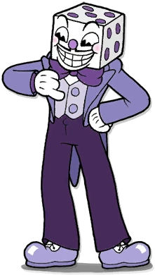

-
Xicrinho
HP 300
Descriçao
Xicrinho é tipicamente uma pessoa legal; ao lado de seu irmão mais novo Caneco, desfrutando de uma vida tranquila e boa, mas é incansavelmente otimista, sua confiança e vontade de aventura podem levá-lo a parecer desonesto, ou colocá-lo em apuros, mas em sua essência, ele é bondoso que quer fazer o bem
-
Sr. Rei Dado
HP 800
Descriçao
Sr. Rei Dado é um indivíduo extremamente desprezível, enganoso não confiável e manipulador. Enquanto normalmente relaxado e alegre de uma maneira sádica, ele pode ser tão cruel como se chefe(ᴛʜᴇ ᴅᴇᴠɪʟ), se quiser.
-
Diabo
HP 1200

Descriçao
Tal como muitas representações de Satanás, o Diabo é um ser cruel e malévolo que concede ofertas a qualquer ofereça em troca sua alma e servidão. Antes de batalhar ele concorda em poupar Xicrinho e Caneco se eles entregarem todos os contratos de almas. Ele também não tem empatia com os outros, incluindo seus próprios servos, como é evidente por ele chamar o Rei Dado, um "imprestável", depois que ele perde na luta com o jogador.
Diabo têm como característica principal o seu orgulho e egocentrismo, acreditando que ele sempre ganhará no final.